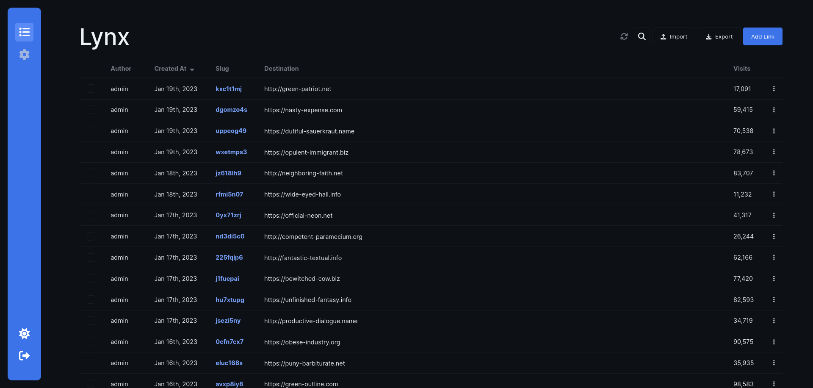
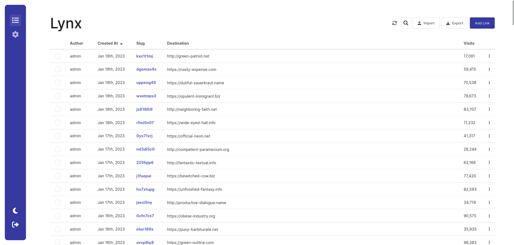

The sleek, powerful URL shortener you've been looking for.
Lynx is a URL shortener built using the MEVN stack with features such as multi-user support, ShareX integration and 2FA.


Lynx is a URL shortener built using the MEVN stack with features such as multi-user support, ShareX integration and 2FA.